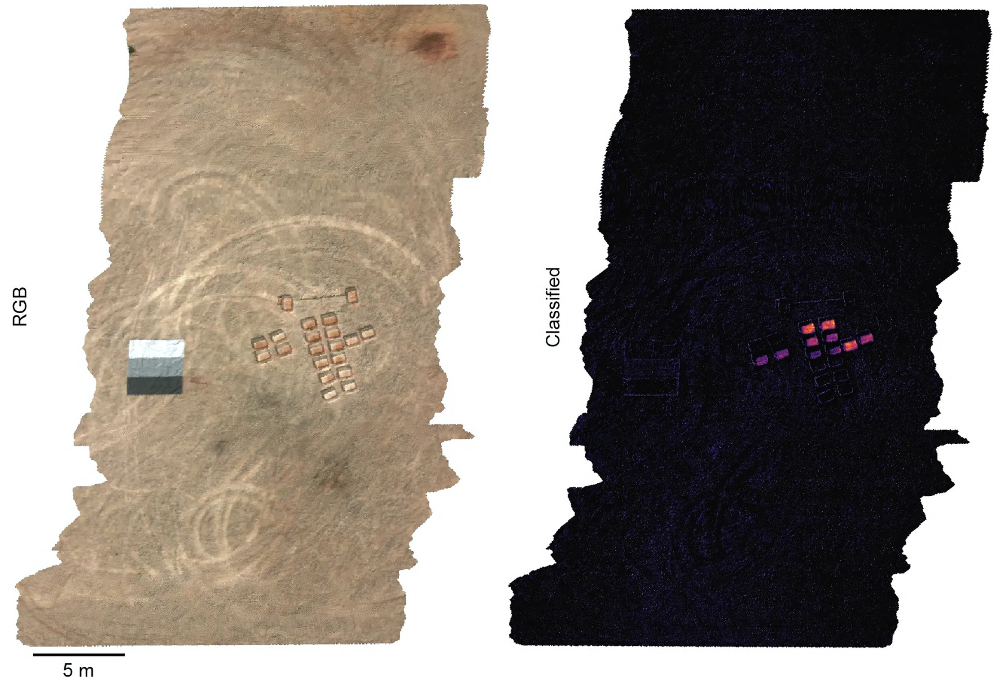
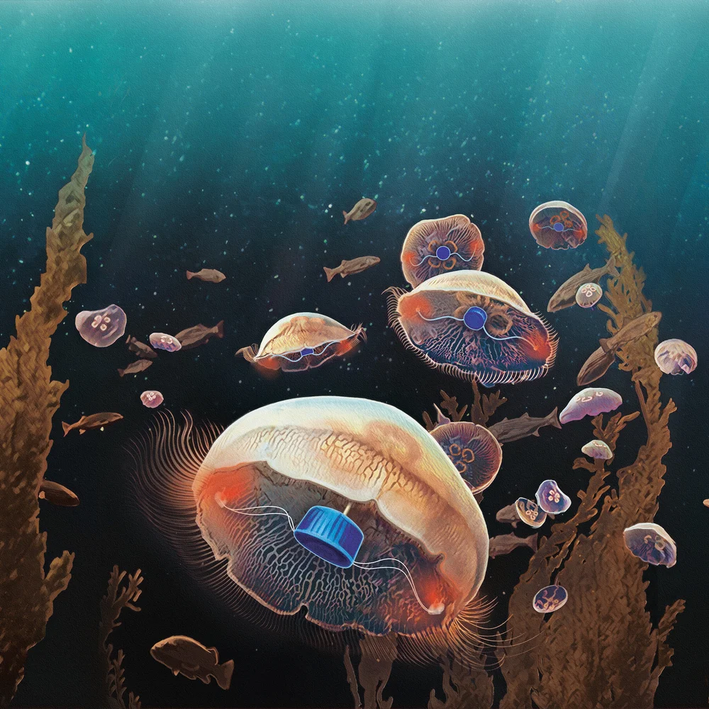
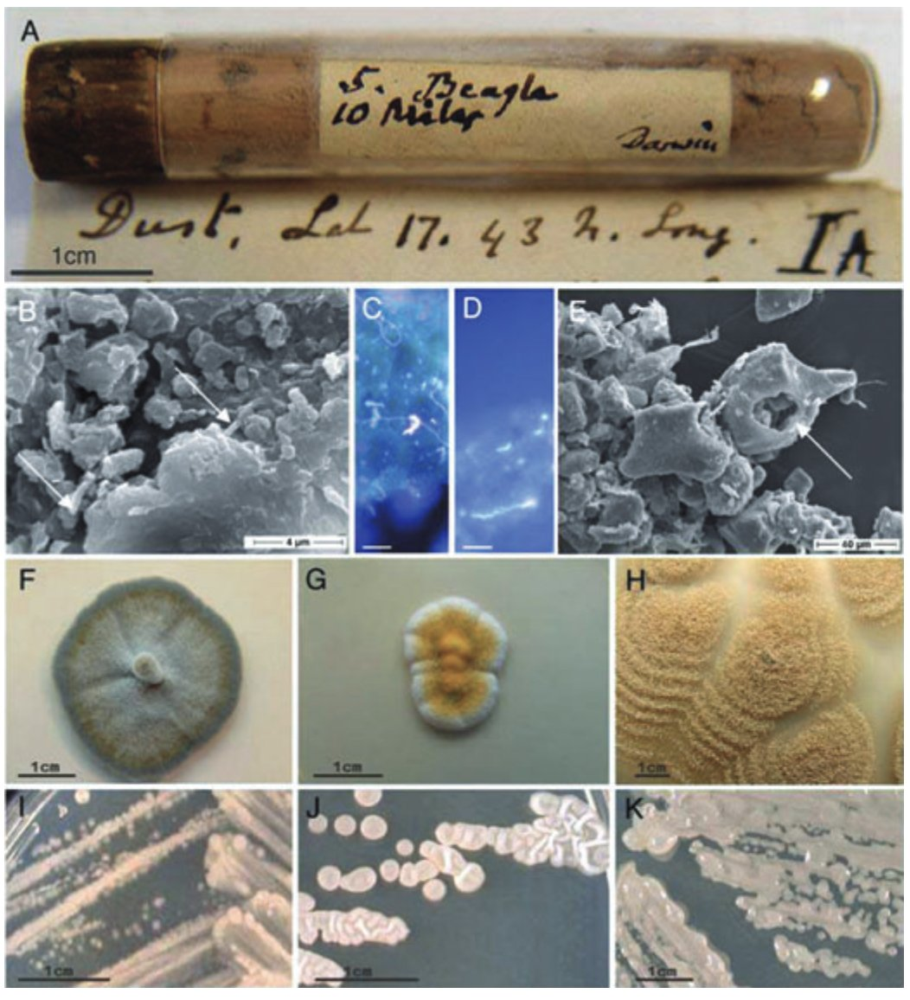
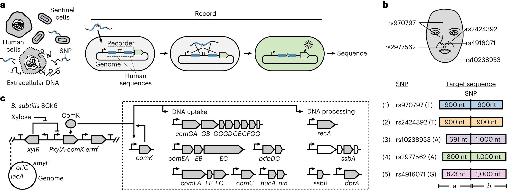

In On Writing, Stephen King says “serious” writers ought to spend at least four hours a day writing; hands on keyboard or pen to paper. Anything less is a hobby.
By that standard, most of my writer friends are hobbyists. They spend their days talking to people, finding ideas, and bemoaning the fact that they haven’t written anything in a week. This (sometimes) describes my own life, too. There are weeks where I’m lucky to get in an hour of writing per day.
The less I write and the more I talk to people, the faster my list of ideas grows. When I started writing, I had maybe 10 decent ideas. Today, that number is 347. Some are great, many are mediocre, and all have varying amounts of notes attached to them.
I’m now resigned to the fact that I’ll die long before clearing out my list. The heap keeps growing, regardless of how often essays get sent out. The space of interesting ideas, even in a “narrow” domain like biotechnology, is too vast for any one writer — or team of writers — to circumnavigate in a lifetime. One could write four hours a day and come nowhere near.
What to do? For starters, I’ve decided to publish some of my half-baked ideas, in the hope that others will become fascinated by them, choose to write about them, or reach out with enticing details. These are all ideas I’d like to write about at some point, but don’t have time for in the near future. If you want to talk about any of them, I’m at nsmccarty3@gmail.com.
1. Hyperspectral Biology
It is possible to see microbes from outer space. That sentence sounds ridiculous, but it’s true.
The trick is to use something called a “hyperspectral reporter,” or a gene encoding a protein that makes a gaseous molecule. These molecules leave the cell, float into the air, and absorb specific wavelengths of light.
Now imagine a satellite overhead carrying a hyperspectral camera. It’s like a regular camera, except it measures photons from each pixel across hundreds of wavelengths — infrared, visible, UV — creating a full spectral signature for every pixel. In other words, the camera measures light at 400 nm, 700 nm, 1500 nm, and other wavelengths.
And finally, combine the two. If microbes make enough gaseous molecules, they create a spectral “fingerprint” visible to the hyperspectral camera. Researchers at MIT engineered microbes to detect TNT (the explosive in landmines) and emit hyperspectral molecules in response. After spraying these microbes onto small patches of soil seeded with explosives, the signal was visible from space.

Now scale this up. Why stop at explosives? Why not engineer microbes to sense pathogens, or to act as an early warning system for agricultural bioterrorism? We could spray microbes in key areas and monitor them autonomously, looking for “hyperspectral microbial signatures” using existing satellites. There are at least 50 satellites with hyperspectral cameras in orbit today. We could build an entirely autonomous, planetary-scale biosensing network to detect any pathogen or toxin.
Doing so will require that we first reform the Toxic Substances Control Act, however. This is an idea that I’m expanding upon in a forthcoming article for Works in Progress magazine.
2. Biology for Beauty
Nature is often described as the most beautiful thing on Earth, far exceeding artistic works from Monet and Picasso. Yosemite and the Grand Canyon feel as if they were sculpted by the hands of God; all other art is unmistakably the work of humans.
There should be entire companies and nonprofits devoted to making beautiful things with biotechnology. There are a few reasons why.
First, biotechnology has historically worked in reductionist ways. Many of our drugs and tools, such as rapamycin and CRISPR, came about by stripping genes and molecules from their native contexts. Such reductionism obscures complexity. By studying molecules in isolation, we fail to understand how they work as part of an interwoven system.
We can start solving this issue by engineering beauty, a subjective phenotype that arises from systems-level interactions. A flower is beautiful not because it emits a single fragrance, but because of its color, shape, size, patterns, and so on. All of these traits work together to create a subjective experience of beauty. By engineering all of these pieces together — as Nick Desnoyer and Sebastian Cocioba do — we’ll learn a lot about how plants develop and work as holistic organisms. Efforts to engineer beauty will provide a much deeper sense of how systems-level complexity emerges.
Second, beauty brings people into the field. The “glow in the dark” plants developed by Light Bio were featured widely by the mainstream press. Orders-of-magnitude more people know about those plants than the latest incremental cancer drug. Beauty is a way to grow interest.
And third, the market is big. People buy ornamental vases for no reason other than they like the way they look. Pugs are evolutionarily suboptimal, but are now a huge industry (hundreds of millions of dollars?) simply because they have been bred to satisfy an aesthetic desire. The Juliet Rose, developed via breeding over a 15-year period, debuted at the 2006 Chelsea Flower Show and is enormously profitable. Why should engineered forms of beauty be any different?
3. Mapping the Air and Oceans
More than 90 percent of marine life, or about 2 million species, has not yet been discovered. Only about a quarter of the seafloor has been mapped in any detail, and far less at high resolution. (All of Mars and Venus have been mapped.)
Craig Venter once sailed his yacht around the world, collecting water samples and sequencing the microbes within. He discovered at least 1,800 new microbial species and something like 6 million new genes. But sampling underwater has been relatively sparse, and could expand these numbers by orders-of-magnitude. Sequencing the Earth is generally a good idea; it’s how we will find more useful biotechnology tools (like CRISPR and rapamycin!). Modern PCR was made possible by an enzyme found in a geyser-dwelling microbe, for example, and CRISPR was first identified in microbes living in Spanish salt ponds.
But we can go further. What if we used animals to study the ocean in ways that underwater vehicles cannot? This is what John O. Dabiri, a professor at Caltech, is doing. His report on “Bio-inspired Ocean Exploration” is deeply inspiring.
“The ocean represents…99% of the habitable volume on Earth,” Dabiri writes, “and yet, less than one-tenth of one percent of the seafloor has been mapped” at a resolution of 1 meter. We ought to map and sequence it, but doing so is not possible with any existing man-made technology.
“It has been estimated that it would require 200 shipyears to sample the entire ocean at just one depth,” Dabiri writes. “That is, a single ship moving through the ocean for 200 years, or a fleet of 200 ships, all working in concert for a whole year — just to measure one depth in the ocean.” A typical, propeller-driven underwater vehicle costs about $50,000, and you’d need a whole fleet of them. And this just to study what’s happening at, say, 100 meters below the surface.
Most people underestimate the vastness of oceans. “The volume of ocean water is roughly one billion cubic kilometers,” Dabiri writes. “A uniformly distributed array of one million measurement systems would therefore each still be tasked with monitoring an area equal to the size of the city of Los Angeles in the United States (1,000 km2) and throughout a depth of one kilometer of the ocean. By this thought exercise, it becomes apparent that even one million sensors would likely be a significant underestimate for the task at hand.”
Dabiri’s solution is to attach tiny microcontrollers and batteries to living jellyfish, and then use them to explore the ocean. Jellyfish don’t have a swim bladder, so they “can be found as deep as the Marianas Trench, at least 3,700 meters below the ocean surface.” Each jellyfish can be steered using pulses of electricity. Jellyfish don’t have a central nervous system or pain receptors, so they probably don’t suffer. In the lab, they didn’t show any signs of stress, impaired feeding, or reproduction. Each microcontroller only costs a few dollars, and they can be attached to a jellyfish in “a few seconds.”

We should not stop at the ocean, either. Biologists should also look to the air.
Microbes can travel thousands of miles, traversing continents by riding on dust motes carried by atmospheric winds. In 1832, while aboard the HMS Beagle, Darwin gathered some dust into a little tube while sailing off the coast of West Africa. He later sent this tube to German naturalist Christian Gottfried Ehrenberg, who studied the microbes within using a microscope. Ehrenberg documented 67 distinct organic forms (whatever that means), but had no idea where the dust had originated. In 2007, researchers re-examined six different dust samples from Ehrenberg’s collection and found that they were still crawling with life, nearly two centuries later. Their paper is titled “Life in Darwin’s dust.” Each grain of dust in Ehrenberg’s collection had between 10,000 and 100,000 viable microbes living upon them.

Sand from the Sahara desert travels all the way to New York City; a recent paper also found Saharan dust in the Swiss Alps, 3600 meters above sea level. This dust can carry diseases over vast distances, or carry an agricultural pathogen to fields located hundreds of miles away. We have barely begun to study the microbes hitching rides on these atmospheric winds. Conversely: what if airborne microbes were engineered to monitor atmospheric health, or to track emissions in certain regions, in the same way Dabiri uses jellyfish to map oceans?
Another nascent field I’m intrigued by is AirDNA. Every time you breathe, saliva droplets are released into the air. These droplets contain DNA, which can be captured and sequenced. After the DNA settles out of the air onto the ground after about 24 hours, it gets wrapped into dust, and sits there for years.
It is feasible to take the dust from a room and build a genomic record of everyone who has ever entered it. This is obviously a scary idea if governments decide to wield it against citizens. Emerging biotechnology methods make it both more exciting and (arguably) even scarier.
In 2023, researchers at MIT engineered living cells (Bacillus subtilis) to take up and permanently record DNA from their surroundings. The bacteria were programmed to only record particular DNA sequences, and were sensitive enough to distinguish between two sequences differing by a single nucleotide, or "letter." When the cells sense a target sequence, they capture it and copy it into their own genome, where it is protected from the nucleases and UV light that would otherwise degrade environmental DNA. The engineered cells can detect DNA at exceptionally low concentrations — about 4.6 femtomolar.
These so-called “sentinel” cells could be used to figure out what a person looks like, solely by storing the trace amounts of DNA they leave behind in a room. Many facial features are influenced by single-nucleotide polymorphisms (SNPs), or single-letter variants in the genome that correlate with things like nose width and eye spacing. The MIT team engineered cells to detect five facial SNPs and showed each could be detected independently. Sprayed onto a surface, these cells would capture SNPs and, once sequenced later, reveal who passed through. The SNPs could then be uploaded to an AI model and used to infer what a person looks like.
This is not science fiction. The authors say it directly in the paper: “we demonstrated sentinel cells on a set of five human SNPs associated with human facial features. One could record this information in a single cell or consortium, recover the DNA, and use artificial intelligence to rebuild the predicted face.”
